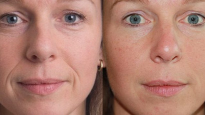
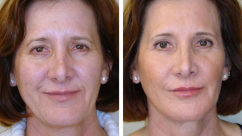

Πώς να δείχνεις 30 στα 50;
 Δημιουργήθηκε από Νεφελη Ζαχαριαδου
Δημιουργήθηκε από Νεφελη Ζαχαριαδου

Λείο μεταξένιο δέρμα στο πρόσωπο. Υγιεινή απόχρωση με ελαφρύ ρουζ. Χωρίς σακούλες κάτω από τα μάτια, ρυτίδες στο πρόσωπο και χαλασμένο περίγραμμα. Όλα αυτά σε μια ηλικία που η φυσική ομορφιά δίνει τη θέση της σε φυσικές αλλαγές – μετά από 50 χρόνια. Πραγματικότητα ή μυθοπλασία; Δηλώνουμε με ευθύνη αυτή την πραγματικότητα και χωρίς τη χρήση πλαστικής χειρουργικής.
Συλλέξαμε για εσάς στα φόρουμ τρεις απίστευτες ιστορίες για την ομορφιά των ενήλικων γυναικών, τις οποίες θα ζηλέψουν οι σταρ του Χόλιγουντ. Για να διατηρήσουν τη νεότητά τους, όλοι χρησιμοποίησαν την κρέμα - όχι την πιο δημοσιοποιημένη, αλλά αποτελεσματική, προσιτή και κατάλληλη για οικιακή χρήση θεραπεία με φυτικά βλαστοκύτταρα στη σύνθεση.
Δωροθέα, Λαρισα, νοικοκυρά, μητέρα διδύμων
Εδώ είναι η φωτογραφία μου. Είμαι παρέα με τις ενήλικες κόρες μου.

Όταν οι άνθρωποι με ρωτούν για το μεγαλύτερο καμάρι μου, σπεύδω να μιλήσω για τα παιδιά και το πώς μοιάζουμε με αυτά. Η Ελενη και η Βασιλικη είναι δίδυμες. Όσο για τις παραδόσεις μας, τις γέννησα αρκετά αργά - στα 28 μου. Για να είμαστε δίκαιοι, πρέπει να σημειωθεί ότι τώρα φαίνομαι ακόμα καλύτερα από εκείνα τα χρόνια. Όμως πέρασε ένα τέταρτο του αιώνα!
Αγαπώ τις κόρες μου. Η σχέση μας είναι φιλική, είμαστε πάντα μαζί και είναι ακόμα πιο διασκεδαστικό που συχνά μας μπερδεύουν με τα τρίδυμα))) Τα κορίτσια με βοήθησαν πραγματικά με γονίδια. Αλλά μέχρι την ηλικία των 50 ετών, το δέρμα μου ήταν αισθητά κατεστραμμένο και ήθελα να φαίνομαι νέα. Για να συνεχίσω να λαμβάνω φιλοφρονήσεις παρέα με τις κόρες μου, άρχισα να σκέφτομαι δραστικά μέτρα - την ίδια πλαστική επέμβαση.
Όμως η Ελενη μου σπουδάζει δερματολόγια και ακολουθεί όλη την έρευνα, την καινοτομία, τις εξελίξεις στον κλάδο της. Ήταν αυτή που έφερε τη θαυματουργή κρέμα στο σπίτι. Η κόρη μου επέμενε να ολοκληρώσω το προγραμμα - 32 ημέρες. Σταδιακά, άρχισα να βλέπω την αποκατάσταση της πρώην νιότης μου - οι υπερκείμενες ρυτίδες εξαφανίστηκαν σε μερικές εβδομάδες, χρειάστηκε άλλη μια εβδομάδα για να αποκατασταθεί ο τόνος και το βελούδινο στο δέρμα. Ήθελα να σταματήσω εκεί, αλλά η κόρη μου είπε να ολοκληρώσει το προγραμμα. Διόρθωσα λοιπόν το εφέ και εδώ και μισό χρόνο δείχνω αντάξια παρέα με τις κόρες μου!
Ελινα, Αθηνα, 54 ετών, επικεφαλής εταιρείας επενδύσεων
Ο ρυθμός της ζωής μου είναι ένας συνεχής ανεμοστρόβιλος! Έχω έως και 40 πτήσεις το χρόνο,
συμπεριλαμβανομένων και των διηπειρωτικών. Συνεχής έλλειψη ύπνου, οι πιο σπάνιες επισκέψεις στην
αισθητικό, αιώνιο άγχος. Φυσικά, όλα αυτά δεν προσθέτουν στη νεανική μου εμφάνιση, αλλά παρόλα
αυτά, ρίξτε μια ματιά στη φωτογραφία.

Έχω πάντα την στην τσάντα μακιγιάζ μου. Αυτό είναι ένα βολικό συμπαγές βάζο κρέμας. Είμαι πολύ σχολαστικός, πειθαρχημένος άνθρωπος. Επομένως, δεν ξεχνάω να πραγματοποιώ διαδικασίες αντιγήρανσης με αυτό το προιον 3-4 φορές το χρόνο. Όπου κι αν βρίσκομαι, όπου κι αν βιάζομαι το επόμενο πρωί, αλλά το βράδυ απλώνω την σε καθαρό δέρμα προσώπου. Συνέπεια, κανονικότητα, συνέπεια - αποδεικνύεται ότι στα σχεδόν 45 μου μοιάζω με το πολύ 35. Η κρέμα θρέφει το δέρμα με φυτικά βλαστοκύτταρα, υαλουρονικό οξύ και φυσικά εκχυλίσματα, μαγνήσιο και φυσικό κολλαγόνο αποκαθιστούν την ισορροπία του νερού. Είμαι σίγουρη ότι η συγκεκριμένη κρέμα είναι μια άξια επιλογή για γυναίκες που έχουν χρόνο για όλα σε αυτή τη ζωή!
Μαρία,Θεσσαλονικη, 52, σχεδιάστρια-στιλίστα
Από τους φίλους και τους συναδέλφους μου της ίδιας ηλικίας με εμένα, οι μισοί έχουν ανυψωθεί, οι
μισοί φαίνονται καλά, αλλά ακόμα 50+. Τα τελευταία τρία χρόνια παλεύω με ανεμόμυλους. Θέλω πολύ
να γίνω ένα αντάξιο ζευγάρι για τον 33χρονο σύζυγό μου, αλλά τα χρόνια κάνουν τον φόρο τους.
Όξινα πίλινγκ, μπότοξ, μάσκες με υαλουρονικό οξύ, καθώς και σπιτικά φρούτα και ξινόγαλα.
Προσωπικά δοκίμασα με μια ντουζίνα αντιγηραντικές λοσιόν και τζελ. Τακτοποίησα στη κρεμα
Μια σύντομη επισκόπηση αυτού του προιοντος:
- ● η υφή είναι λεπτή, ομοιογενής, με ένα ελαφρύ μη ερεθιστικό άρωμα,
- ● εύκολο στην εφαρμογή - λεπτό ομοιόμορφο στρώμα, τέλεια κατανεμημένο και απορροφημένο, ταυτόχρονα έντονο και απαλό αποτέλεσμα,
- ● δεν συσφίγγει το δέρμα, δεν υπάρχει αίσθηση φιλμ στο πρόσωπο, απορροφάται από το δέρμα αμέσως, κάνοντας το αμέσως μεταξένιο και ενυδατωμένο,
- ● Εφάρμοζα την κρέμα δύο φορές την ημέρα για τρεις εβδομάδες, χρησιμοποίησα δύο βάζα - σαν να έχω χάσει 15 χρόνια. Σκοπεύω να επαναλάβω το προγραμμα σε έξι μήνες.
Τα κορίτσια στη δουλειά δεν πιστεύουν ότι ένα τέτοιο αποτέλεσμα μπορεί να επιτευχθεί χωρίς χειρουργική ανύψωση, επομένως σε όλα τα κοινωνικά δίκτυά μου, στα φόρουμ, όπου είναι δυνατόν, αναφέρω έναν σύνδεσμο προς τον επίσημο ιστότοπο του κατασκευαστή κρέμας. Υπάρχει μια κοινή άποψη στο Διαδίκτυο ότι υπάρχουν ψεύτικα, ευτυχώς δεν τα συνάντησα, γιατί παραγγέλνω μόνο εδώ.
Εντυπωσιασμένοι από τέτοιες κριτικές, συμφωνήσαμε με τον κατασκευαστή για μια έκπτωση για τους αναγνώστες μας. Τώρα μπορείτε να επιτύχετε νεανικότητα και φρεσκάδα του προσώπου - στο σπίτι και χωρίς σημαντική ζημιά στον προϋπολογισμό.


Ελισαβετ
Posted 6 days ago
Σχετικά με αυτήν την κρέμα στο Διαδίκτυο, τι δεν είναι μια κριτική, τότε απόλαυση! Λένε μια πραγματική επανάσταση στην κοσμετολογία. Μου φαίνεται ότι δεν θα τους επιτραπεί να το εκλαϊκεύουν πολύ, γιατί είναι ένας άξιος ανταγωνισμός όχι μόνο για κρέμες της Loreal ή της Vichy, αλλά και για ενέσεις μπότοξ και όλων των ειδών τα σιδεράκια. Και αυτός είναι ένας ολόκληρος επιχειρηματικός κλάδος, επομένως είναι προς το συμφέρον μας να αναζητούμε πληροφορίες λίγο-λίγο και να χρησιμοποιούμε τέτοιες μοναδικές προσφορές όπως αυτή. Ευχαριστώ τους συγγραφείς!
Αννα
Posted 5 days ago
Παρήγγειλα μια κρέμα, χθες πήρα το δέμα. Μου συνέστησαν να δοκιμάσω τουλάχιστον μια πορεία 21 ημερών, με βάση την πάθηση του δέρματος που περιέγραψα. Έχω μεγάλες ελπίδες για αυτό το προιον, αν γίνουν πραγματικότητα, σίγουρα θα καυχηθώ!
Δημητρα
Posted 6 hours ago
Φροντίστε να δημοσιεύσετε φωτογραφίες. Για παράδειγμα, εδώ είναι τα δικες μου!  Φαντάζεσαι?! Και αυτό είναι μόνο μερικοί μήνες χρήσης. Αλλά δεν θα σταματήσω εδώ, νομίζω, μερικούς μήνες ακόμα και θα γίνω σαν κορίτσι!
Θοδωρής
Posted 4 days ago
Δεν θα πίστευα ποτέ ότι θα μου έβγαινε χρήσιμο, αλλά χάρη στη δημοσίευσή σας, αγόρασα στη γυναίκα μου ένα υπέροχο δώρο και τώρα με ειδωλοποιεί! Μια τέτοια ομορφιά έχει γίνει, πραγματικά ανθίζει με αυτήν την κρέμα. Ευχαριστω.
Σπυρος
Posted 3 days ago
Για μένα, αυτό είναι πλήρης βλακεία. Κάπου διάβασα ότι το να απαλλαγείς από τις ρυτίδες είναι σχεδόν αδύνατο, πρέπει να αποτρέψεις την εμφάνισή τους. Δεν καταλαβαίνω πώς λειτουργεί αυτό το προιον με ιδιαίτερο τρόπο, που εξομαλύνει τις ρυτίδες σε μερικούς μήνες. Αν το δέρμα ξεθώριασε, τότε είναι για πάντα.
Ιωαννα
Posted 2 days ago
Λοιπόν, ενώ είστε εδώ με τον σκεπτικισμό σας, παραγγέλνω δύο βάζα για τον εαυτό μου ταυτόχρονα. Δεν με νοιάζει πώς λειτουργεί εκεί, αρκεί να λειτουργεί. Θα εξακολουθούσα να αμφιβάλλω για τις κριτικές αγνώστων, αλλά ο γείτονάς μου το χρησιμοποιεί αυτό και με έχει συμβουλεύσει το εδώ και πολύ καιρό. Το ανέβαλα, αλλά αφού έφτασα σε αυτό το άρθρο και μια τόσο υπέροχη έκπτωση, θα το χρησιμοποιήσω.
Αθανασία
Posted 9 hours ago
Ναι, απλά κοιτάξτε πώς φαίνεται η μαμά μου μετά το προγραμμα με το . Έχω αρχίσει να σκέφτομαι να παρακολουθήσω αυτό το προγραμμα για τον εαυτό μου. Είναι αλήθεια ότι δεν έχω ρυτίδες ως τέτοιες, αλλά η γνώμη ακούστηκε κάπου σωστά - είναι καλύτερα να μην το επιτρέψετε παρά να τις καταπολεμήσετε αργότερα. 
Έλενα
Posted 14 hours ago
Η αισθητικός μου άλλαξε πρόσωπο όταν τη ρώτησα για την . Από την οποία υπέθεσα ότι φοβόταν μην με χάσει ως πελάτη. Φυσικά, είναι πιο κερδοφόρο για αυτούς να αντλούν εκατοντάδες χρήματα μαζί μας κάθε μήνα και όχι μία φορά να συμβουλεύουν μια πραγματικά αποτελεσματικο προγραμμα. Πόσο να ξεγελαστείς, κουράστηκα!! Παραγγέλνω λοιπόν το και,αφινω, αυτά τα πολύ ακριβά σαλόνια.